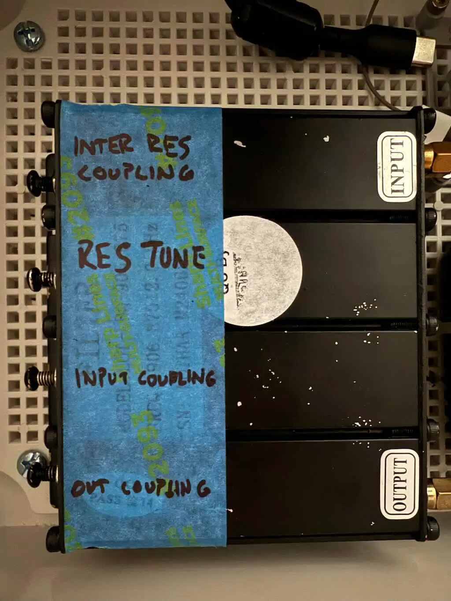

Tuning an Airframes Cavity Filter for Meshtastic or MeshCore
This guide shows how to identify unlabeled screws on a small cavity band-pass filter and tune it for Meshtastic bands (e.g., US915 or EU868) using a nanoVNA. It’s written for the Airframes filter.
An overview video is available on our YouTube channel.
Tools & Materials
- nanoVNA
- Two short, quality 50 Ω coax jumpers(typically comes with a VNA)
- 50 Ω terminations (for calibration and optional port-match checks)
- Non-metallic surface to work on
- Tape/marker to label screws A, B, C, D
- Screwdriver, wrench/pliers
Before You Start
- Let the VNA and filter sit a few minutes to reach room temperature.
- Keep cable/adapters identical during calibration and measurement.
- Work in tiny moves: 1/16–1/8 turn per step. Never force a hard stop.
Calibrate the nanoVNA
- Choose a span that fully covers your target band:
- Start wide at
50 MHz, later zoom to ~8 MHzcentered around your desired freq.
- Start wide at
- Perform a full 2-port SOLT calibration (O/S/L on both ports, then THRU).
- Save the calibration to a slot for reuse.
Recommended nanoVNA Trace Setup
Configure four traces so you rarely need to toggle views:
- Trace 1: S11 LOGMAG (REFL) - input return loss (match quality).
- Trace 2: S21 LOGMAG (THRU) - insertion loss; the “passband hill.”
- Trace 3: S11 Smith set to R + jX - shows input impedance relative to 50 Ω.
Place markers on your desired center frequency. e.g. 906.875 for Meshtastic LongFast or 910.525 for MeshCore
Identify the screws
- Label the four screws A, B, C, D.
- For each screw:
- Note the current traces, then rotate the screw +1/8 turn.
- Watch S21 LOGMAG, S11 LOGMAG, and Smith:
- Resonator tuning screw: the S21 peak frequency slides left/right; phase slope shifts.
- Inter-resonator coupling screw: passband bandwidth/ripple changes more than center frequency.
- Port (input/output) coupling screw: S11 depth/Smith position changes strongly; S21 shape changes little.
- Return the screw to its original position (−1/8 turn) and log what you saw.
- After testing A–D, you should have two tuning screws and two coupling screws identified (usually one inter-resonator + one port coupling). 
Core Tuning Procedure
- Find and zoom the passband: With S21 LOGMAG visible, sweep wide to locate the “hill,” then narrow the span around your target (e.g., 904–914 MHz for a 910.5 MHz center).
- Align the resonators to center frequency:
- Adjust Tuning Screw 1 with tiny turns until the S21 peak moves toward your center.
- Adjust Tuning Screw 2 to "pull" the top into a single tall peak centered on your target.
- Iterate 1–2 until the highest S21 point sits at your center. A smooth, monotonic S21 Phase trace indicates good alignment.
- Set the bandwidth (inter-resonator coupling):
- Increase coupling -> wider passband, lower center loss, may add ripple.
- Decrease coupling -> narrower passband, steeper skirts, sometimes higher center loss.
- Optimize input match (port coupling):
- Watch S11 LOGMAG and the Smith point at center. Target ≤ −15 dB S11 with impedance near 50 Ω + j0.
- If Smith shows capacitive (−jX), back the probe/screw out slightly; if inductive (+jX), advance slightly. Stop when the dot sits near the Smith center and S11 dip deepens.
- Final polish:
- Re-maximize S21 at center with tiny alternating tweaks on both tuning screws.
- Confirm −3 dB bandwidth, insertion loss at center (ideally ~1–2 dB; some cans land ~3 dB), and S11 (≤ −10 dB acceptable, ≤ −15 dB preferred).
Troubleshooting Patterns
- Two peaks / “camel back”: resonators are off-frequency or over-coupled. Re-align tuning screws and slightly reduce inter-resonator coupling.
- Wide but lossy top: likely over-coupled. Reduce coupling, then re-center both resonators.
- Great S11 but high loss: resonators not exactly centered; re-maximize S21 at the target frequency.
- Asymmetric skirts: one resonator still off; balance with tiny opposing moves.
Targets & Reference Values
- Center frequency: your Meshtastic channel/center (e.g., 910.5 MHz).
- Bandwidth: 1-2 MHz for the Airframes
- Insertion loss (S21@center): ≤~3 dB is acceptable.
- Return loss (S11/S22@center): ≤ −10 dB acceptable; ≤ −15 dB preferred.
Save Your Results
- Save a calibration slot and the final trace state on the nanoVNA.
- Tighten the nuts while maintaining screw position. Keep an eye on the VNA while you do this!